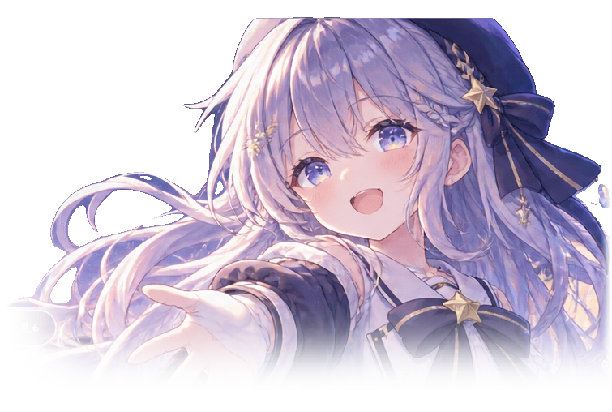
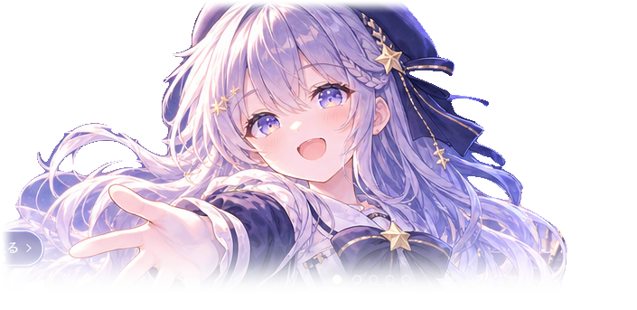

星詠ミオ公式サイトがオープンしました。
観測所へようこそ。ここから私たちの物語が始まります。
SIGNAL DETECTED · 00:01:27
星詠 ミオ HOSHIYOMI MIO
真夜中、きみの世界とわたしの宇宙がつながる。
これは、まだ名前のない星から届いた物語。

天文台から届いた、お知らせ。
観測所へようこそ。ここから私たちの物語が始まります。
ひとりぼっちの観測所に、小さな返事がありました。
87.7 MHz付近に秘密のメッセージが隠れています。
このカテゴリーの記事はありません。
宇宙のどこかにいる、きみへ。
夜の観測所でひとり、星から届く電波を聴いている女の子。
遠く離れた誰かの「さみしい」が、少しでも軽くなるように。今日も小さなアンテナを空へ向けています。
「見えなくても、
ちゃんとそこにいるって、
私は信じてるよ。」

観測所からの、ひみつの通信。
周波数を合わせると、ミオからのメッセージが届きます。
ヘッドホンはなくても大丈夫。きみの心に、そっと。
受信ボタンを押して、通信を開始してください。
AWAITING TRANSMISSION...
星詠ミオの声を、想像してみて。
以下のセリフは端末の音声合成機能で読み上げます。実際のミオの収録音声ではありません。ブラウザによって利用できる声や音質が異なります。
再生ボタンを押すと音声合成が開始します。
オリジナルの電子音でつくる、小さなアンビエント音楽。
誰も知らない、星の記録。
昨日より少しだけ、遠くの声が聞こえた気がする。
規則正しい音が七回。もしかして、返事なのかな。
甘いものを食べると、宇宙も少し近くなる。
この瞬間も、宇宙は広がっている。
世界中の夜空は、どこかでつながっている。
明日の夜も、ここで会おうね。
失くした星を、ひとつずつ。
天文台に隠された七つの光。星をタップすると、ミオの記憶が少しずつ戻ってきます。全部見つけると、特別なメッセージが届きます。
光る星を選んでみてください。
「見つけてくれてありがとう。きみが七つ目の星だったんだよ。」
送らない手紙も、大切な記録。
今夜の気持ちを、こっそり書きとめてみませんか。この手紙はサーバーには送信されず、使っているブラウザの中にだけ保存されます。
きみだけの、星空を。
好きなサイズを選んで、星詠ミオのオリジナル壁紙を生成できます。背景や文字はブラウザで描画し、画像生成したキャラクター素材を合成します。
プレビューを作成しています。